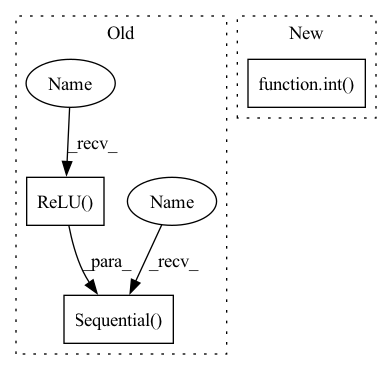

Pattern ID :23371

Before Change
nn.Conv2d(num_T, num_S, kernel_size=(int(input_size[0]),1), stride=1, padding=0),
nn.ReLU(),
nn.AvgPool2d(kernel_size=(1,8), stride=(1,8)))
self.Sception2 = nn.Sequential(
nn.Conv2d(num_T, num_S, kernel_size=(int(input_size[0]*0.5),1), stride=(int(input_size[0]*0.5),1), padding=0),
nn.ReLU(),
nn.AvgPool2d(kernel_size=(1,8), stride=(1,8)))
self.BN_t = nn.BatchNorm2d(num_T)
self.BN_s = nn.BatchNorm2d(num_S)
After Change
self.Tception2 = self.conv_block(1, num_T, (1, int(self.inception_window[1] * sampling_rate)), 1, self.pool)
self.Tception3 = self.conv_block(1, num_T, (1, int(self.inception_window[2] * sampling_rate)), 1, self.pool)
self.Sception1 = self.conv_block(num_T, num_S, (int(input_size[1]), 1), 1, int(self.pool*0.25))
self.Sception2 = self.conv_block(num_T, num_S, (int(input_size[1] * 0.5), 1), (int(input_size[1] * 0.5), 1),
int(self.pool*0.25))
self.BN_t = nn.BatchNorm2d(num_T)
In pattern: SUPERPATTERN
Frequency: 3
Non-data size: 3
Instances
Fragment ID: 73496161
Project Name: deepbrains/tsception
Commit Name: 9dc2895027e2ab9803ebda880c0bfa401bdd2570
Time: 2021-04-07
Author: 58539144+deepBrains@users.noreply.github.com
File Name: Models.py
M Class Name: TSception
N Class Name: TSception
M Method Name: __init__(8)
N Method Name: __init__(8)
M Parent Class: nn.Module
N Parent Class: nn.Module
M File Name: Models.py
N File Name: Models.py
M Start Line: 26
M End Line: 61
N Start Line: 34
N End Line: 53
'>
Before Change
nn.ReLU(),
nn.AvgPool2d(kernel_size=(1,16), stride=(1,16)))
self.Sception1 = nn.Sequential(
nn.Conv2d(num_T, num_S, kernel_size=(int(input_size[0]),1), stride=1, padding=0),
nn.ReLU(),
nn.AvgPool2d(kernel_size=(1,8), stride=(1,8)))
self.Sception2 = nn.Sequential(
nn.Conv2d(num_T, num_S, kernel_size=(int(input_size[0]*0.5),1), stride=(int(input_size[0]*0.5),1), padding=0),
nn.ReLU(),
After Change
// achieve the 1d convolution operation
self.Tception1 = self.conv_block(1, num_T, (1, int(self.inception_window[0] * sampling_rate)), 1, self.pool)
self.Tception2 = self.conv_block(1, num_T, (1, int(self.inception_window[1] * sampling_rate)), 1, self.pool)
self.Tception3 = self.conv_block(1, num_T, (1, int(self.inception_window[2] * sampling_rate)), 1, self.pool)
self.Sception1 = self.conv_block(num_T, num_S, (int(input_size[1]), 1), 1, int(self.pool*0.25))
self.Sception2 = self.conv_block(num_T, num_S, (int(input_size[1] * 0.5), 1), (int(input_size[1] * 0.5), 1),
'>
Fragment ID: 73496096
Project Name: deepbrains/tsception
Commit Name: 9dc2895027e2ab9803ebda880c0bfa401bdd2570
Time: 2021-04-07
Author: 58539144+deepBrains@users.noreply.github.com
File Name: Models.py
M Class Name: TSception
N Class Name: TSception
M Method Name: __init__(8)
N Method Name: __init__(8)
M Parent Class: nn.Module
N Parent Class: nn.Module
M File Name: Models.py
N File Name: Models.py
M Start Line: 26
M End Line: 61
N Start Line: 34
N End Line: 53
'>
Before Change
self.conv2 = nn.Sequential(nn.ReflectionPad2d(1), nn.Conv2d(num_init_features, num_init_features, 3), nn.ReLU())
self.upsample = upsample_block(in_channels=num_init_features, scale_factor=scale_factor)
self.conv3 = nn.Sequential(nn.ReflectionPad2d(1), nn.Conv2d(num_init_features, num_init_features, 3), nn.ReLU())
self.conv4 = nn.Sequential(nn.ReflectionPad2d(1), nn.Conv2d(num_init_features, out_channels, 3), nn.ReLU())
def forward(self, inputs):
conv1 = self.conv1(inputs)
After Change
upscale_factor (int): Image magnification factor. (Default: 4).
super(Generator, self).__init__()
self.upsample_block_num = int(math.log(upscale_factor, 2))
// First layer
self.conv1 = nn.Conv2d(3, 64, kernel_size=3, stride=1, padding=0, bias=False)
'>
Fragment ID: 73496133
Project Name: lornatang/esrgan-pytorch
Commit Name: 8ef58f0f8458d618a99fffa07433927c9b9ef70f
Time: 2020-10-12
Author: liuchangyu1111@gmail.com
File Name: esrgan_pytorch/model.py
M Class Name: Generator
N Class Name: Generator
M Method Name: __init__(2)
N Method Name: __init__(7)
M Parent Class: nn.Module
N Parent Class: nn.Module
M File Name: esrgan_pytorch/model.py
N File Name: esrgan_pytorch/model.py
M Start Line: 99
M End Line: 125
N Start Line: 181
N End Line: 210
'>
Before Change
if train_from_scratch:
w_attr_1, b_attr_1 = self._init_weights()
w_attr_2, b_attr_2 = self._init_weights()
self.classifier = nn.Sequential(
nn.Linear(config.MODEL.TRANS.HIDDEN_SIZE,
config.MODEL.TRANS.HIDDEN_SIZE,
weight_attr=w_attr_1,
bias_attr=b_attr_1),
nn.ReLU(),
nn.Dropout(config.MODEL.DROPOUT),
nn.Linear(config.MODEL.TRANS.HIDDEN_SIZE,
config.MODEL.NUM_CLASSES,
weight_attr=w_attr_2,
bias_attr=b_attr_2),
nn.Dropout(config.MODEL.DROPOUT),
)
else:
// classifier head (for finetuning)
w_attr_1, b_attr_1 = self._init_weights()
self.classifier = nn.Linear(encoder_embed_dim,
After Change
super(MAEFinetuneTransformer, self).__init__()
// create positional embedding
self.encoder_position_embedding = PositionalEmbedding(embed_dim,
int(1 + (image_size / patch_size) * (image_size / patch_size)))
// create patch embedding with positional embedding
self.patch_embedding = PatchEmbedding(image_size,
patch_size,
'>
Fragment ID: 73496061
Project Name: br-idl/paddlevit
Commit Name: f35d8370eb5924d2eae4019b2b69fc4c20fe01e0
Time: 2021-12-03
Author: 479469418@qq.com
File Name: image_classification/MAE/transformer.py
M Class Name: MAEFinetuneTransformer
N Class Name: MAEFinetuneTransformer
M Method Name: __init__(15)
N Method Name: __init__(15)
M Parent Class: nn.Layer
N Parent Class: nn.Layer
M File Name: image_classification/MAE/transformer.py
N File Name: image_classification/MAE/transformer.py
M Start Line: 634
M End Line: 658
N Start Line: 605
N End Line: 628